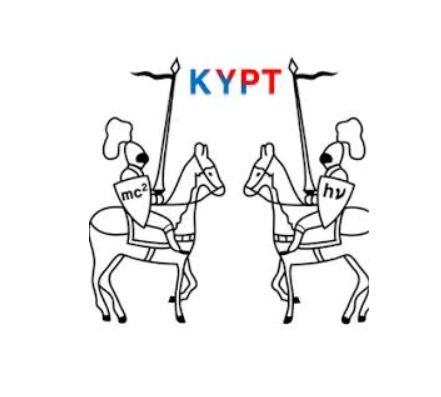

KYPT scoring system is developed by Hyungho Choi (최형호) (IYPT 2018) to give transparency and shit
the development of this system was inspired by a shitstorm of KYPT 2020, when a careless error in a complicated excel sheet casued a score upset and some team wrongfully qulifying in the finals